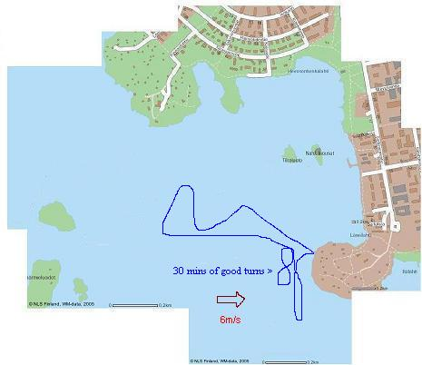
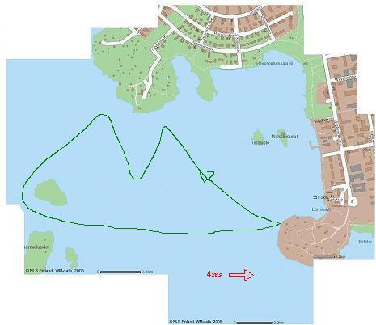
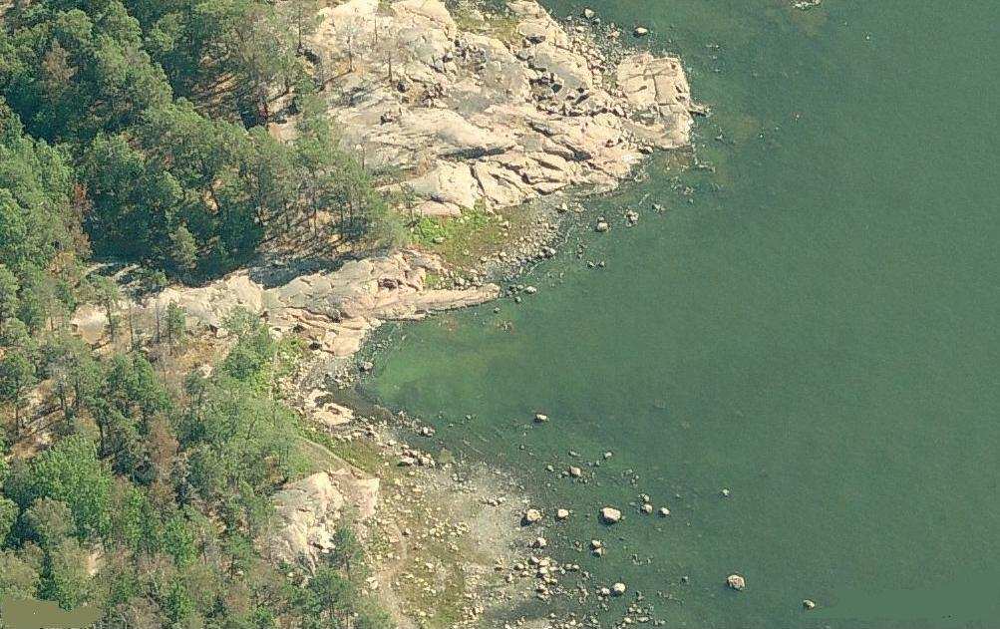

Windsurfing Diary
Kit
Board: Onboards Free 140
Sails: 6.2 Arrows /
4.5 Skimbat / luff 405 / boom156 / mast400,26,19 ext:6cms
Mast:25icms / 460 / 30% carbon
Boom:180-225
(old board) Starboard Go: 2000 (wood) 83cms wide, 190ltrs
Sat 14th May 2005
Wind: 6 m/s SE
Time: 11am - 3pm
First surf of 2005. Sunny day (sunburned face). Light to average wind. Tried new 4.5 metre sail but there was no power. Also, this sail is difficult to rig on my current mast and boom. Came back into beach and rigged the 6.5 sail. Much better. Needed to tack up to NW and then round the island and back to the beach. Shoulders and arms really feeling it :O)
14-05-2005
Wed 25th May 2005
Wind: 8-10 m/s ENE (into the bay)
Time: 5pm - 7pm
I started off with tired arms/legs from yesterday's gym workout & I was stupid enough to rig up my 6.2 sail instead of the 4.5 (note.. ask others what size they're going out with). Overpowered is an understatement. I spent an hour or so getting thrown all over the place and then let myself drift through the rocks into the bay. Funnily enough, the wind in the bay was perfect, but I was too knackered by this point to do anything. I did plane beautifully for about 10 seconds into the bay before my arms gave up the ghost :OD
Wed 8th June 2005
Wind: 6 m/s South
Time: 5pm - 7.30pm
Not very windy and I had my small (4.5) sail up but it was good to practice my turns. The wind was blowing south so I just stayed in around the sunbathing rocks. Did a little bit of beach starting (water up to my waist) but didn't manage on the slippery rocks/low wind. Another learner (Timo) was out with a 6.9 which seemed more powered. Next low wind day I'll put up the 6.2.
Wed 14th July 2005
Wind: 6 m/s E
Time: 5.30pm - 7pm
Fantastic day. Bright sunshine, 28degrees and the water was lovely and warm. I was in just shorts, life jacket, gloves and boots. 6.2 sail up and the wind was just perfect. All my turns were coming off well. I think the big difference was that I rigged the sail quite loose (not too much downhall) so that it caught the wind nicely. The nose is still going under so I need to slide the mast back an inch or two. I can now quite confidently tack/jibe in light waves and I can beach start up to my knees.
14-07-2005
Wed 20th July 2005
Wind: 10 m/s E
Time: 6.00pm - 6.20pm :OD
Too windy for little ole' me. I put up the 4.5 sail and sat on the rocks watching the others jumping and tricking. Then sailed FAST out into the waves, fell in, and killed my arms trying to uphaul/ control the sail. Then had a nice float back into the bay. Not exactly a successful trip :OD
Thurs 28th July 2005
Wind: 6-8 m/s E
Time: 4.30pm - 7.00pm
After spending some time online getting all the techniques I spent about 1.5 hours tonight practicing beachstarts. I'm getting better and managed one in water up to my upper thighs. I also put the deckplate to exactly 135cms from the tail and it was perfect on the water. I got up some damn good speed and I'm going to try to get in the harness next time.
Mon 1st Aug 2005
Wind: 4 m/s E
Time: 5pm - 6.30pm
First time I wore my harness. The weather websites said about 8ms wind! Good! But when I went down to Lautasaari there was very little wind. I went out anyway and had a very relaxing little trip round the island. Didn't fall in once. Nice evening sail but not exactly exhilirating harness fun.
01-08-2005
Tues 17st Aug 2005
Wind: 8-10 m/s E
Time: 5.30pm - 6.10pm
Lots of wind and I was too tired too stay out for long. Wore my harness but didn't try to get into it. I think I managed to plane for the first time under control. I was going top speed with the front of the board out of the water.
Sat 27th May 2006
Wind: 3-4 m/s E
Time: 1.30pm - 3pm
No wind but I just wanted out on the water before I sell the Starboard Go 180 for a Mistral Explosion 130. Pottered about round the south west beach.
Sat 27th May 2006
Wind: 3-4 m/s E
Time: 1.30pm - 3.30pm
Going through the basics in the sheltered bay with Jarno (his first time) and Daniel (first time for a few years). Good fun but the water was too cold to stand in for ages. Erica came down to laugh at us :O)
Thurs 29th Jun 2006
Wind: 6 m/s E
Time: 10.30pm - 1.00pm
Tried my new On-Boards Free140 in perfect winds and it was lovely :O) The first half hour was spent trying to find the sweet spot and centre of gravity and by the end of the session I'd managed a few successfull tacks and jibes.
Sun 1st July 2006
Wind: bugger all m/s N
Time: 1.30pm - 2.00pm
No wind this side of Luattasaari but I stupidly went out anyway. The new board is far too shaky to use without wind so I killed my arms by self-rescueing back to the shore.
Tues 4th July 2006
Wind: 6 m/s E
Time: 6.30pm - 8pm
Some biggish waves tonight and I'm starting to get used to the new board. It uphauls nicely in waves because it cuts through (instead of bounces over) them. I never pulled off a successful turn but I got it planing a few times. Also practices hooking-in with the sail on the beach.
Wed 12th July 2006
Wind: 8 m/s E
Time: 5.30pm - 8pm
Great session. Wind slightly strong for me so I practiced shallow water starts with a guy giving me tips. Very nearly got it sussed, mast-arm close to chest, pull board-foot back as I get on teh board, let out power as I step up. Then the wind had died down so I planed a bit for 30 mins. Fantastic feeling. I'm getting longer speed under control each time.
Wed 31th July 2006
Wind: 8 m/s E
Time: 12.30pm - 4:30pm
Excellent session with the new board. First time on the south side of Lauttasaari. Nice constant wind from the West but a few rocks under the water until quite far out. The planes are getting longer and I'm getting turns better.
Sat 12th Aug 2006
Wind: 6 m/s E
Time: 12.30pm - 3:30pm
Gave Jarno a lesson with the club's Fanatic Viper.. I'd forgotton how easy it is to sail a board with a daggerboard :O)
Mon 14th Aug 2006
Wind: 8 m/s E
Time: 6.30pm - 7:30pm
Very windy... lots of folk out on the south beach. I just stood in the shallows getting irritated when I could't do a deepwater start! Learned the benefits of plenty downhaul on the sail!
Mon 28th Aug 2006
Wind: 7 m/s E
Time: 5.00pm - 8:00pm
Steady wind, not too strong for me.I spent 30 mins getting the mast in the right place on the board. The sail was perfectly downlauled&outhauled and the board went like a dream! I still can't turn for peanuts because I always want to stop the board first which makes it unstable. I did a few successful tacks and jibes tho :O) The water is still warm and I was a bit too hot in my winter wetsuit.
Sun 24th Sept 2006
Wind: 7 m/s E
Time: 12.00pm - 3:30pm
Steady wind, really good sailing. The sail rigged right made all the difference. I can now control my planing for a long distance and then reign the power back in to (attempt to) turn. The board was turning up in to the wind quite a bit.. I think it's because the mastboot is 136 cms from the tail.. maybe I should move it forward a bit. I'm going to buy a bigger sail for next year to help with waterstarts.
Thurs 28th Sept 2006
Wind: 7 m/s E
Time: 5.00pm - 7:00pm
Oh yes! 3 milestones passed today:
First good carve jibe and tack in waves on the new board. I realise now that I was waiting too late to spin the sail round and so the board was stalling/wallowing and I would lose my balance.
I finally got the shallow water start working. Things to remember: Forward hand close to mast, forward elbow close to body, back hand quite far back for power, back foot between the straps and bend knee to pull the board under you as you stand, let the power out as you get onto the board so that it doesn't pull too fast.
Moved the rig 4 cms forward.. seemed to help quite a bit.
Fri 1st June 2007
Wind: 7 m/s E
Time: 5.00pm - 6:00pm
Only went out for a few runs on the south side of the island. My smaller sail (4.5 metres) needs a smaller boom and mast so I'm going to buy those as soon as I can.
Wed 5st July 2007
Wind: 7 m/s E
Time: 3.00pm - 5:00pm
Holy moley! I went out in moderate wind with a new mast (55% carbon so very light), new boom (small and perfect for the small sail) and a new lifejacket (smaller, hardly know I'm wearing it). The small 4.5m sail is now very light and the whole setup is perfect! I was tacking and jybing like a pro.. and uphawling wasn't a pain at all... heaven!
July 2007: Portugal
Wind: 7 m/s
Time: 1 hour
Took a very floaty beginners board out with a 5m sail in Portugal. Very easy to use and I could feel how far I've progressed because the sailing was a bit boring :O)
Wed 8th Aug 2007
Wind: 7 m/s SE
Time: 6:00pm - 8:30pm
2nd time out with my new mast/boom and smaller sail and I've sussed the tack and nearly got the jibe in choppy water. Bright sunshine, sunbathers, a p0rn photoshoot going on at the bay.. all good fun. I came into shore just as the sun was beginning to set and then cycled home.. bliss.
08-08-2007
May 2008
Wind: 3.5 m/s SE
Time: 6:00pm - 7:30pm
No wind.. just checking that the equipment survived the winter... which it did. Went out on the water for an hour. Met a guy who I'm going to go through the basics with next week.
May 2008
Wind: 6.5 m/s SE
Time: 5:00pm - 7:30pm
Took a club beginner's board out on the bay for 'Teri' (?) to practice the basics. Nice weather but a bit cold. He did very well and got the idea of the starting position and turning.
Jun 2008
Wind: 6.5 m/s SE
Time: 5:00pm - 7:30pm
Oh yes... good, normal session but then I put the harness on and for the first time HOOKED IN!!!!. It was a completely natural and relaxed feeling to 'sit down' in the harness and I managed to sail for quite a distance. I only catapulted once and hooked in maybe 5 times in all. Excellent!
Jul 2008
Wind: 8 m/s SE
Time: 5:00pm - 7:30pm
Very windy but nice to see lots of kiters and windsurfers at Lauttasaari. I beachstarted in water nearly up to my waist and did one fantastic tack in big waves. The water was a bit too choppy to turn but I was bouncing over those waves like a mad monkey.
Aug 2008
Wind: 4 m/s
Time: 14:00pm - 17:00pm
Nice afternoon with Dan practicing on the very floaty Startboard Start board.
Sept 2008
Wind: 8 m/s SE
Time: 5:00pm - 7:30pm
Very windy. for some reason my 4.5m sail was saggy in the middle when I fully downhawled and outhawled it. I should have an extra 6cms of mast extension on it but it's never been like that before. Weird.. maybe a new sail purchase is in order.
May24 2009
Wind: 6 m/s SE
Time: 1:00pm - 3:00pm
Rigged the 4.5 sail for a few hours of nice harness work. Yup... harness. The wind was very light so I wasn't blasting at all which meant I had lots of time to get used to the harness. Looking forward to using it in stronger winds. I've been doing this for years now and my turning in waves is still crap.. oh well.
May26 2009
Wind: 6 m/s SE
Time: 5:00pm - 6:30pm
Got my turns working again. When carve-jibing I need to remember to step onto the inside rim of the board pretty quickly so that I don't fall forward. I can now hook in to the harness all the time in quiet wind.
In 2010 I went windsurfing exactly 0 times because I bought a boat with 2 friends and learned to sail with all my spare time.
In 2011 I went once to check the board would still float :P. Selling the sailboat (Iida Klaara) this year so lets see how much I surf in 2012!
May 2012
Nice easy run to check the board
May 2012
Used harness for about a minute then catapulted. Thinking about going for a long distance run one evening soon